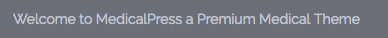
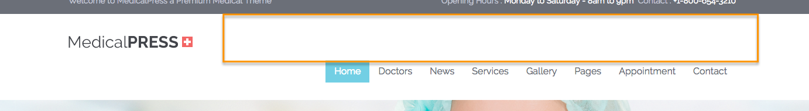
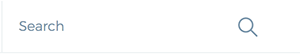
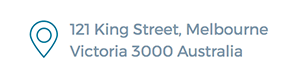

Configure Header Settings
To configure header related settings kindly navigate to Dashboard » MedicalPress » Theme Options » Header and configure the options according to your choice.

Default Variation Specific Header Options
Following options are available only in Default design variation.
Sticky Header
You can check the sticky header in the following video (look at the top header which is fixed and doesn't disappear on scroll the page up and down).
Header Text

WPML Language Switcher

Top Margin for Main Menu

Reborn Variation Specific Header Options
Following options are available only in Reborn design variation.
Social Links

Search Box

Contact Address
